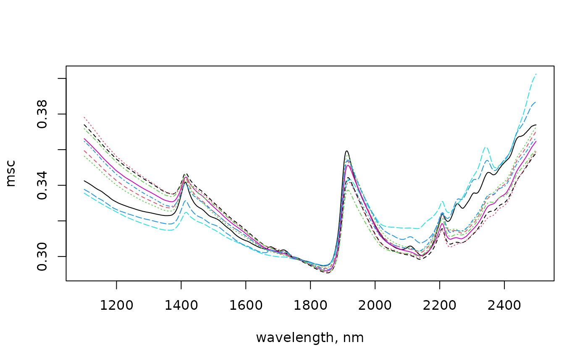

This function implements the multiplicative scatter correction method which attempts to remove physical light scatter by accounting for additive and multiplicative effects (Geladi et al., 1985).
Usage
msc(X, ref_spectrum = colMeans(X))Arguments
- X
a numeric matrix of spectral data.
- ref_spectrum
a numeric vector corresponding to an "ideal" reference spectrum (e.g. free of scattering effects). By default the function uses the mean spectrum of the input
X. See details. Note that this argument was previously named asreference_spc, however, it has been renamed toref_spectrumto emphasize that this argument is a vector and not a matrix of spectra.
Value
a matrix of normalized spectral data with an attribute which indicates the reference spectrum used.
Details
The Multiplicative Scatter Correction (MSC) is a normalization method that attempts to account for additive and multiplicative effects by aligning each spectrum (\(x_i\)) to an ideal reference one (\(x_r\)) as follows:
\[x_i = m_i x_r + a_i\] \[MSC(x_i) = \frac{x_i - a_i}{m_i}\]
where \(a_i\) and \(m_i\) are the additive and multiplicative terms respectively.
References
Geladi, P., MacDougall, D., and Martens, H. 1985. Linearization and Scatter-Correction for Near-Infrared Reflectance Spectra of Meat. Applied Spectroscopy, 39(3):491-500.
Author
Leonardo Ramirez-Lopez and Guillaume Hans
Examples
data(NIRsoil)
NIRsoil$msc_spc <- msc(X = NIRsoil$spc)
# 10 first msc spectra
matplot(
x = as.numeric(colnames(NIRsoil$msc_spc)),
y = t(NIRsoil$msc_spc[1:10, ]),
type = "l",
xlab = "wavelength, nm",
ylab = "msc"
)

# another example
spectra_a <- NIRsoil$spc[1:40, ]
spectra_b <- NIRsoil$spc[-(1:40), ]
spectra_a_msc <- msc(spectra_a, colMeans(spectra_a))
# correct spectra_a based on the reference spectrum used to correct
# spectra_a
spectra_b_msc <- msc(
spectra_b,
ref_spectrum = attr(spectra_a_msc, "Reference spectrum")
)